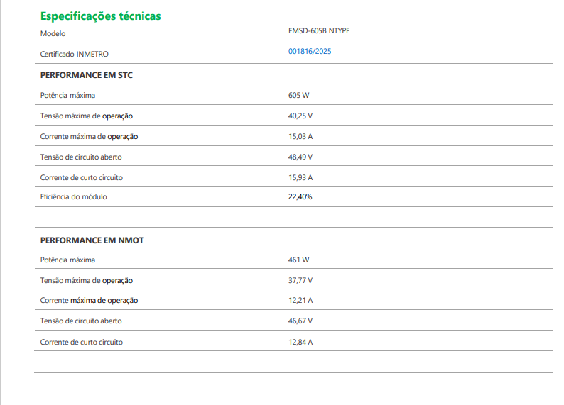

Neste trabalho, abordarei de maneira geral sobre o tema “Sistemas Fotovoltaicos”. Os sistemas Fotovoltaicos são responsáveis por transformar a radiação solar em energia elétrica através do efeito fotovoltaico. É de suma importância conhecer ao menos um pouco sobre essa tecnologia, pois de forma progressiva ela tem se tornado cada vez mais próxima da nossa realidade do cotidiano. Ela contribui fortemente ao meio ambiente, sendo uma fonte de energia sustentável (não emana qualquer poluente) e renovável (sua fonte de energia é inesgotável).
Contudo, este trabalho incluirá assuntos como: efeito fotovoltaico, como a energia solar é convertida em energia elétrica? Placas solares Intelbras e os principais modelos disponíveis e suas características técnicas.
EFEITO FOTOVOLTAICO
O efeito fotovoltaico é um fenômeno proveniente da luz do sol que, ao entrar em contato com os painéis solares, a luz é convertida em energia elétrica. Quanto mais a placa for exposta ao sol, mais energia ela converterá. Isso também se aplica a incidência da radiação solar, quanto mais forte, mais energia ela irá produzir.
Como a energia solar é convertida em energia elétrica?
As partículas de luz solar, ao colidirem com os átomos contidos no painel solar, geram movimento nos elétrons que, em cadeia, produzem correntes elétricas chamadas de “energia solar fotovoltaica”. Essa corrente é contínua e precisa ser convertida em alternada para que possa ser usada em residências ou comércios.
PLACAS SOLARES INTELBRAS
As placas solares da Intelbras atualmente dominam o mercado brasileiro de energia solar, sendo referência na qualidade e tecnologia. Com 45 anos de experiência no mercado de tecnologia, a empresa vem inovando e trazendo novos modelos cada vez mais eficientes, captando mais energia solar, com maior vida útil e melhor custo-benefício.
Principais modelos disponíveis e suas características técnicas
No site da Intelbras, é possível encontrar esses dois modelos de placa disponíveis. O EMSD 605B e o EMSD 585B. Ambos possuem células bifaciais que permite, capturar a irradiação solar tanto na parte frontal quanto na traseira, grau de proteção IP68 que indica a resistência do produto à exposição a certas condições climáticas e tecnologia N-Type, que proporciona maior eficiência na captura e armazenamento da energia solar, evitando perdas e mantendo uma boa durabilidade. Além disso, possuem ampla garantia, assistência técnica nacional e registro no INMETRO.
Tabela de especificações técnicas
Modelo: EMSD-605B NTYPE.  Fonte: Intelbras (2025).
COMPONENTES DO SISTEMA
Estrutura de fixação
A estrutura de fixação é o conjunto responsável por sustentar os módulos solares e mantê-los no ângulo correto para captar a radiação solar. Essas estruturas geralmente são feitas de alumínio ou aço galvanizado, materiais que oferecem resistência à corrosão e durabilidade mesmo em condições climáticas adversas, além de garantir firmeza contra ventos e chuvas, também ajudam a otimizar a inclinação e o alinhamento dos painéis, o que aumenta a eficiência do sistema.
Inversor (ou microinversores)
O inversor é considerado o “coração” do sistema fotovoltaico, pois é responsável por converter a energia elétrica contínua (CC), gerada pelos módulos, em energia alternada (CA), que é a utilizada em residências e comércios.
Inversor Tradicional (String Inverter): conectado a um grupo de painéis (strings), tem como vantagem o baixo custo inicial, mas pode ter sua eficiência comprometida se um dos módulos sofrer sombreamento ou apresentar mau desempenho. É indicado para sistemas residenciais e comerciais de médio porte.
Microinversores: instalados individualmente ou em duplas nos painéis, permitem que cada módulo opere de forma independente. Isso garante maior eficiência, já que um painel sombreado não compromete os demais. Além disso, trabalham em tensões mais baixas e oferecem monitoramento detalhado, sendo ideais para locais com diferentes orientações de telhado ou propensos a sombreamento.
Cabos e conectores
Os cabos e conectores são fundamentais para interligar todos os componentes do sistema fotovoltaico. Eles conduzem a energia gerada pelos módulos até o inversor e depois até a rede elétrica. Por estarem expostos ao sol e ao calor, precisam ser fabricados com isolamento especial resistente a radiação UV e altas temperaturas. Os conectores, como os do tipo MC4, asseguram conexões firmes, seguras e com baixa perda de energia, evitando falhas elétricas e riscos de curto-circuito.
String box/proteções
A string box, também conhecida como caixa de junção ou de conexão, é um dispositivo utilizado em sistemas fotovoltaicos para consolidar as conexões elétricas dos painéis solares. Sua função principal é agrupar e proteger essas conexões, organizadas em séries chamadas “strings”, e fornecer um ponto centralizado para ligação com o inversor. Além disso, contém proteções como disjuntores, fusíveis e dispositivos contra surtos elétricos, sendo essencial para a segurança, manutenção e eficiência do sistema.
Controladores e baterias
Nos sistemas conectados à rede (on-grid), geralmente não há uso de baterias, mas em sistemas autônomos (off-grid) elas são indispensáveis. O controlador de carga atua regulando a energia que vai para o banco de baterias, evitando sobrecarga e descargas excessivas que possam reduzir a vida útil do armazenamento. As baterias solares armazenam a energia gerada durante o dia para ser utilizada em períodos noturnos ou em locais sem acesso à rede elétrica, garantindo autonomia energética.
Medidores e monitoramento
Os medidores e sistemas de monitoramento permitem acompanhar a quantidade de energia gerada, consumida e injetada na rede elétrica. Nos sistemas conectados à rede, é utilizado o medidor bidirecional, que registra tanto a energia consumida da concessionária quanto a energia excedente injetada pelo sistema solar. Já os sistemas de monitoramento digital, presentes em inversores ou plataformas online, fornecem dados em tempo real sobre o desempenho dos módulos, auxiliando na manutenção preventiva e na análise da eficiência do sistema.
Conclusão
Bom, podemos concluir que o sistema fotovoltaico é essência para o nosso futuro. Seu surgimento não apenas trouxe consigo uma nova maneira de gerar eletricidade, como também uma fonte de energia limpa, ilimitada e sustentável. Podendo ser usada tanto no comercial como no residencial. Em resumo, o sistema fotovoltaico é formado por uma estrutura é fixa que possui ângulos ajustáveis para melhor eficiência na captura energética realizada pelos módulos. Microinversores que realizam a conversão da energia elétrica contínua (CC) para alternada.
cabos e conectores que são fundamentais para interligar todos os componentes do sistema fotovoltaico. A string box, também conhecida como caixa de junção ou de conexão, que é um dispositivo utilizado em sistemas fotovoltaicos para consolidar as conexões elétricas dos painéis solares, os controladores e baterias que servem para armazenar e controlar o fluxo elétrico, e por fim, os medidores e sistemas de monitoramento que permitem acompanhar a quantidade de energia gerada, consumida e injetada na rede elétrica.
Processos do cotidiano serão automatizados, desde tarefas domésticas até o seu uso em grandes áreas dos setores industriais. Dentro da indústria os robôs estão avançando cada vez mais, sendo programados e desenvolvidos para atuar em diversos setores, como montagem, soldagem, pintura, mecânica industrial entre outros. Diversas empresas aumentaram sua produtividade com os robôs industriais e colaborativos, aumentando a segurança de seus colaboradores, sua eficiência, reduzindo seus custos e consequentemente aumentando suas vendas.
Projeto no SolidWorks
Vídeo do projeto no SolidWorks:
Suporte de Placa Solar com Rastreamento Solar Automático.
Este é apenas um protótipo, criado para demonstrar o sistema responsável pelos movimentos da placa solar. A base contém todo o mecanismo que permite o giro nos dois eixos: • Eixo X: movimentação pela base circular • Eixo Y: controle feito pelo motor nas juntas do braço articulado
Mesmo sendo um protótipo, o suporte foi pensado para simular um sistema de rastreamento solar real. Ele ajusta a posição da placa ao longo do dia, acompanhando o movimento do sol para manter o melhor ângulo possível. Enquanto estruturas fixas captam luz apenas de forma limitada, nosso modelo demonstra como um rastreador inteligente pode aumentar o aproveitamento de energia, principalmente pela manhã e no fim da tarde.
Referencias
INTERNATIONAL FEDERATION OF ROBOTICS. Industrial Robots. IFR. Disponível em: https://ifr.org/industrial-robots
UNIVERSAL ROBOTS. Aplicações: montagem. Universal Robots. Disponível em: https://www.universal-robots.com/pt/aplicacoes/montagem/
UNIVERSAL ROBOTS. Aplicações: paletização. Universal Robots. Disponível em: https://www.universal-robots.com/pt/aplicacoes/paletizacao/
UNIVERSAL ROBOTS. História dos cobots. Universal Robots. Disponível em: https://www.universal-robots.com/br/noticias-e-midia/centro-de-noticias/historia-dos-cobots/
BRANCO, Bruno. Cobots: a evolução dos robôs convencionais. MBM Solutions, 2021. Disponível em: https://blog.mbmsolutions.com.br/cobots-a-evolucao-dos-robos-convencionais/
ARV Systems. Robôs industriais e cobots: quais são as principais diferenças. ARV Systems. Disponível em: industrialrobots
INTERNATIONAL FEDERATION OF ROBOTICS. Industrial Robots. IFR. Disponível em: industrialrobots
INTERNATIONAL FEDERATION OF ROBOTICS. Industrial Robots. IFR. Disponível em: industrialrobots
INTERNATIONAL FEDERATION OF ROBOTICS. Industrial Robots. IFR. Disponível em: industrialrobots
INTERNATIONAL FEDERATION OF ROBOTICS. Industrial Robots. IFR. Disponível em: industrialrobots